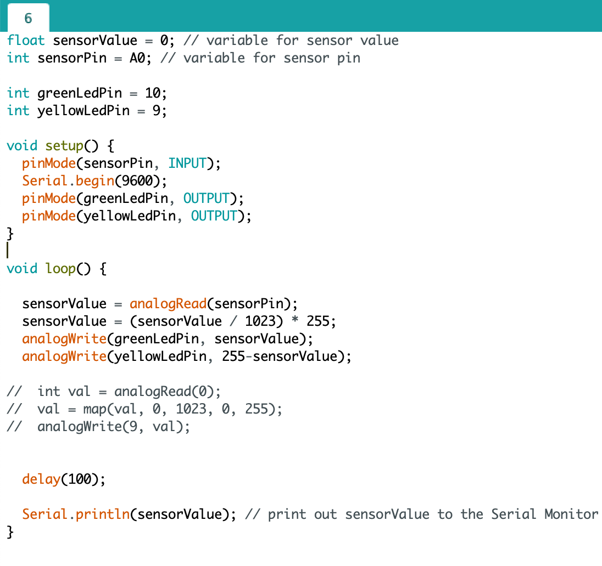

Het doel van deze workshop was om kennis te maken met A-frame en hoe je een virtuele ruimte ermee kan bouwen. En om te ontdekken waar je meer over het framework kunt leren, zodat je het op je eigen projecten kunt toepassen.
Voor de a-frame opdrachten heb ik ervoor gekozen om zowel de introduction als de opgeleverde advanced opdrachten te maken. Dit is vrij soepel verlopen en bij sommige opdrachten heb ik ook wat meer geoefend met kleuren en foto's. Voor de opdrachten waar het voor nodig was heb ik ook schermopnames gemaakt.
De eerste opdracht ging erg makkelijk, aangezien het een 'getting started' opdracht was. Er was al van alles klaargezet in een html bestand, maar die moest getest en gepublished worden op de Github website. Bekijk de eerste opdracht.
Opdracht 2 bestond uit vormen toevoegen. Je zag een overzicht aan voorbeelden waar je uit kon kiezen, zoals: een circle, cylinder, cone, ring etc. Het was de bedoeling om hiermee te spelen en te oefenen. Deze opdracht bestond uit 6 stappen en van de laatste stap heb ik een schermopname gemaakt.
Bekijk de opdracht.
In de derde opdracht moesten we werken met afbeeldingen toevoegen aan objecten. We moesten objecten als het waren wrappen met de afbeelding. Bekijk de opdracht.
Tot nu toe bleven de objecten stil staan, voor deze opdracht moesten we een animatie toevoegen Van stap 7 heb ik een schermopname gemaakt.
Bekijk de opdracht.
Opdracht 5 was de eerste opdracht van de 2 advanced opdrachten waarvoor ik heb gekozen. Deze opdracht draaide om interactie tussen objecten. Dit gebeurt door een trigger animatie, als je over het object heen hovert met je muis begint hij te bewegen. Bekijk de opdracht.
Deze opdracht ging ook over interactie tussen objecten, maar het ging in dit geval over de interactie die plaatsvindt als je een headset op hebt. De laatste stap heb ik vastgelegd door een schermopname te maken.
Bekijk de opdracht.
Unreal Engine is een ontwikkelomgeving waarin je virtuele werelden kunt creëren. Het is momenteel de belangrijkste game-engine en is gebruikt om veel AAA-games en -simulaties te maken. Tijdens deze opdracht (die uit twee delen bestaat) maak ik kennis met Unreal Engine door een eenvoudige interactieve virtuele omgeving te creëren.
Voor deze opdracht heb ik voor de eerste keer in Unreal Engine gewerkt. Om mijn opdracht te maken heb ik de guide gevolgd, in het begin waren er een aantal trials en errors maar ik heb het uiteindelijk onder de knie gekregen.

Deze workshop is een introductie in Arduino en de wereld van fysiek computergebruik. Arduino is een elektronicaplatform voor het bouwen van prototypes. Het is gebaseerd op flexibele, gebruiksvriendelijke hardware en software. Bedoeld voor kunstenaars, ontwerpers en iedereen die geïnteresseerd is in het creëren van interactieve objecten of omgevingen. Arduino bestaat uit een open-source microcontroller en een software-omgeving om het in te programmeren.
Er zijn in totaal 15 opdrachten die voor Arduino zijn bedacht, maar omdat we niet heel veel tijd hebben zijn niet alle opdrachten verplicht. Ik heb mijn opdrachten samen met Anouk gemaakt en wij merkte dat we er samen best vlot en goed doorheen kwamen. De opdrachten die we moeten vasteleggen in onze portfolio staan hieronder.
Voor opdracht 3B moest je ervoor zorgen dat de groene en gele LED's op verschillende momenten moesten blinken. Dit heb ik gedaan door de code die in het aangeleverde bestand staan te dupliceren. Zo hebben beide LED's een stuk code en in de void loop hebben we de waarde omgedraaid, om het 'alternate' effect te krijgen. Bekijk het filmpje om erachter te komen hoe ik het heb gedaan.
Voor opdracht 4C moest je de code verlengen zodat je een fade in effect bij het ene LED lampje krijgt en een fade out bij de ander. Bekijk het filmpje om erachter te komen hoe ik het heb gedaan.
Opdracht 6C lijkt erg op opdracht 4c. Het verschil hier is dat de lampjes niet uitzichzelf moesten veranderen, maar hiervoor moet je gebruik maken van de potentiometer. Bekijk het filmpje om erachter te komen hoe ik het heb gedaan.
Ik vond dit een erg leuke opdracht. Het was ook een vrij simpele opdracht waarvoor we alleen moesten zorgen dat de LED matrix goed gekoppeld was met het Arduino bord en we moesten de aangeleverde code overnemen. Bekijk het filmpje om erachter te komen hoe ik het heb gedaan.
Opdracht 8 gaat over controle hebben over het LED lampje doormiddel van hoeveel licht er op een sensor valt.
Voor opdracht 9C moesten we een sirene maken. In de opdracht werd ook aangegeven dat om een sirene te creeëren de frequency altijd increased totdat er bepaalde hoogtepunt is bereikt en decreased het weer. Dit was best een pittige opdracht, omdat het heel veel oefenen en testen was. Heel vaak leek het er niet op en op een gegeven moment had ik iets dat erop leek, maar ik dacht dat het niet voldoende was. Gelukkig dacht de docent hier anders over en vondt hij het prima. Bekijk het filmpje om erachter te komen hoe ik het heb gedaan.
Voor opdracht 11C moest ik mijn code aanvullen met aangeleverde code. Bij deze opdracht moesten we gebruik maken van een 'Ultrasonic Proximity Sensor'. Als je bijvoorbeeld je vinger ervoor houd begon het lampje daarop te reageren en dus ook te branden, als je je vinger wegtrok ging het lampje ook uit.
Bij deze opdracht moesten we ook in een nieuw programma (voor mij in ieder geval) werken. We moesten code kopiëren en plakken in een nieuwe sketch (Processing bestand) en daarin de serial port veranderen. Dit moesten we blijven doen totdat we geen error meer in Proccesing zagen en een cirkel te zien kregen in een aparte venster.
Voor opdracht 13A moest je de button koppelen met het lampje en code toevoegen, zodat als je op het knopje klikt het lampje aangaat. Bij opdracht 3B moest je juist het omgekeerde doen. Het lampje stond al aan en we moesten de code zo omdraaien dat als je op de knop klikt, het lampje uitgaat.
Als laatst moesten we werken met een servomotor. Voor opdracht 14B moest je de code veranderen in een manier, waardoor de servo op een interessante/leuke manier beweegt. Na veel gefriemel heb ik de code veranderd dat de servo een soort snelle twist doet. Hiervoor heb ik de code gedupliceerd en de delay verlaagt.
Voor computer vision moet ik een aantal opdrachten in Processing maken. Processing is een open source programmeertaal en omgeving voor mensen die interactieve afbeeldingen en animaties willen programmeren. De eerste opdrachten staan in het teken om wat meer bekend te worden met de software, gaandeweg worden de opdrachten steeds ingewikkelder.
Voor de eerste opdracht moest je drie ovalen maken die allemaal een andere locatie, kleur, hoogte & breedte hadden en met of zonder border.
Voor de tweede opdracht moest je een program schrijven die op zijn minst vier verschillende vormen maakt, in verschillende kleuren en op verschillende locaties.
Voor de derde opdracht moest je 2 vormen maken en ze moesten een andere kleur hebben. Ook moest je ze interactief maken. Ik heb voor een cirkel en rechthoek gekozen. Het begint dan groeiende vormen te tekenen op de positie van de muis.
Opdracht 3B was een redelijke vrije opdracht, wat het juist moeilijker maakte. In opdracht 3A moest je code voor zowel Arduino als voor Processing overnemen en die voor opdracht 3B gebruiken. Je moest een nieuwe combinatie tussen de twee programma's maken. Hier had ik eerst moeite mee omdat het toch nog vrij nieuw is allemaal, zeker als je twee programma's met elkaar moet koppelen en gebruik maken van een LED lampje en je breadbord. Na hulp van klasgenoten ben ik er gelukkig toch nog uitgekomen. Als je in Processing op de play knop klikt en vervolgens over het vierkant heen hovert met je muis, veranderd niet alleen de kleur van het vierkant maar het lampje begint dan ook te branden.
Bij deze opdracht moest je kleur toevoegen aan bestand dat aangeleverd was (via Blackboard). Als je je muis ingedrukt houdt dan krijg je een andere kleur te zien.
Dit was een best pittige opdracht (voor mij althans). Bij een vorige opdracht werden er links aangegeven die je kon bekijken om te zien wat ze doen. Voor deze opdracht moest je één van die linkjes gebruiken en daarmee experimenteren. Vervolgens moest je zelf je eigen variatie maken van je gekozen link/sketch (zij noemen de bestanden sketches). Het was echt lastig omdat ik best veel code voor de eerste keer zag en niet meteen wist wat wat deed. Ik heb uiteindelijk voor een hand tracking link gekozen en een klein stukje van het voorbeeld van 5E - Camera filters toegevoegd. In de originele sketch is de achtergrond van de preview zwart en zie je alleen maar stippen die een gezicht vormen. Ik wilde dit veranderen, dus ik ben hiermee gaan spelen. Hiervoor heb ik wat code van deze website gehaald. Ik heb de INVERT veranderd naar GRAY en onder function setup() heb ik "capture = createCapture(VIDEO);" toegevoegd. Raar genoeg zie je onder de preview 2 'normale' schermen, maar als je niet scrolt dan zie je de tweede ook niet. Ik heb het weg geprobeerd te halen, maar dan verlies ik ook mijn goede scherm.